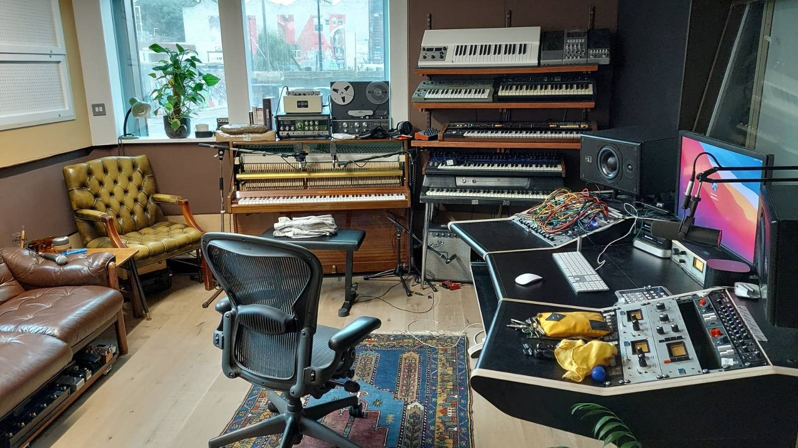
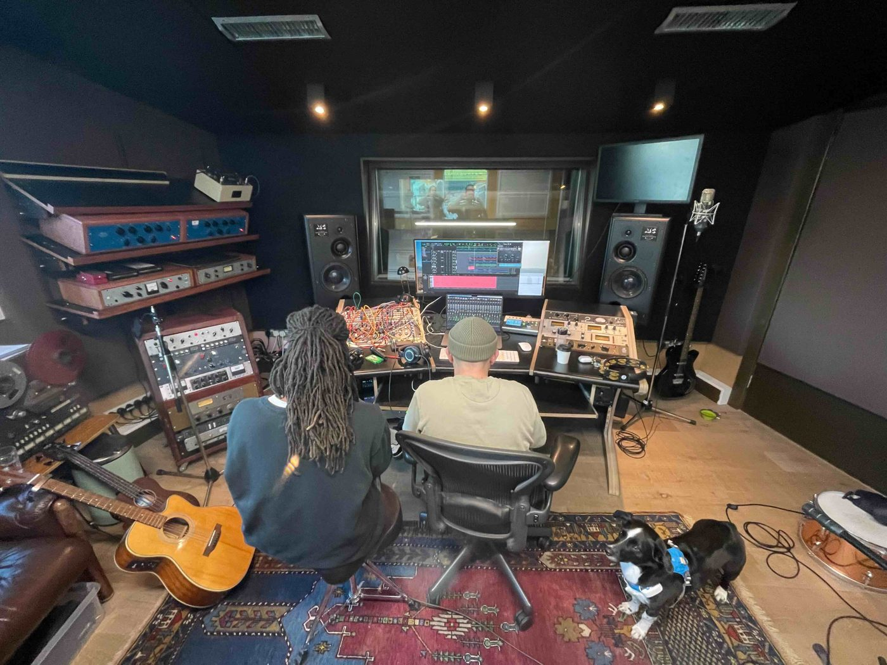
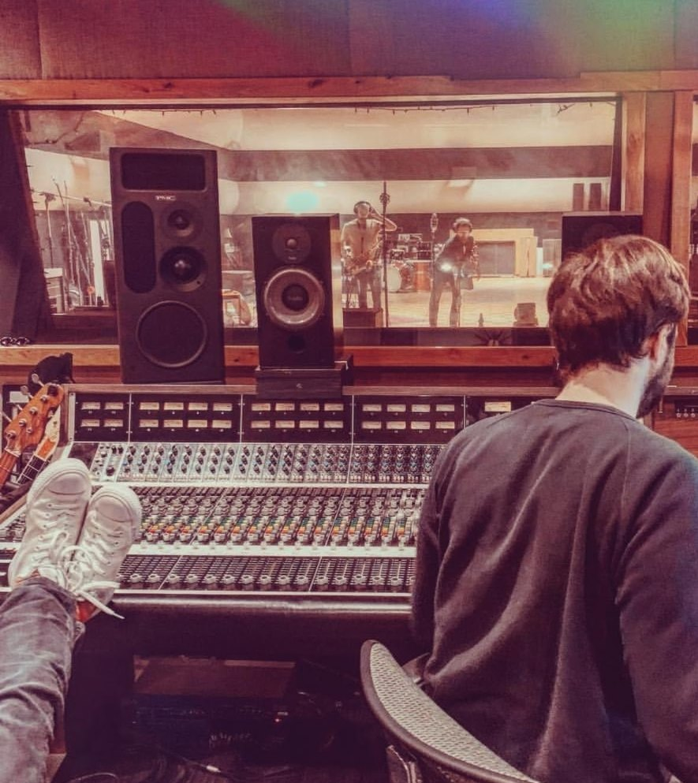
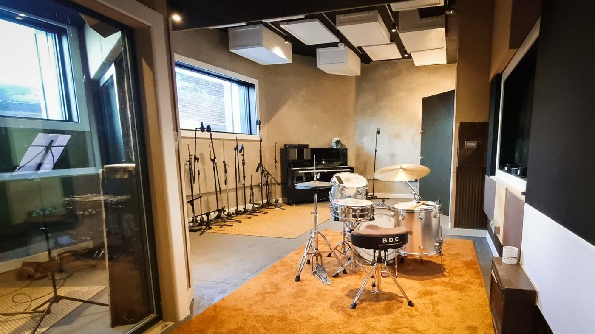

Mixer
Toby
Hulbert
Mixer and recording engineer for film, TV scores and artists.
Credits
-
Tonmeister
Music and Sound Recording at the University of Surrey.
-
Abbey Road Studios
Seven years on staff, working on everything from bands in Studio 2 to film scores in Studio 1.
-
RCA Studio A, Nashville
Engineering for the producer Dave Cobb, recording bands live to tape.
-
Freelance Mixer
In London, working on scores and records from my mix room at Urchin Studios.
Listen
Watch

About

I’m a freelance mixer and recording engineer based in London. I mix and record scores for film and television, and also mix and produce records.
I studied on the Tonmeister course at the University of Surrey, then spent seven years on staff at Abbey Road. In 2019 I went to Nashville to engineer for the producer Dave Cobb at RCA Studio A.
Since coming back to the UK I’ve mixed scores for Supacell, Until I Kill You, Get Millie Black and Chad Powers. I recently recorded and mixed Natalie Holt’s score for Shaun the Sheep: The Beast of Mossy Bottom at AIR Studios with the London Metropolitan Orchestra.
On the records side I’ve recently worked with Autoheart, JONES, Olive Jones and Aaron Taylor.

